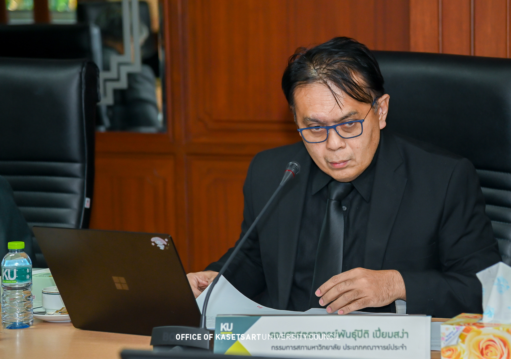

การรู้บทและเล่นตามบทให้ดีที่สุด คือสิ่งที่ทำให้องค์กรเดินหน้าได้อย่างมั่นคง
{kind=link}

บทความนี้ถ่ายทอดประสบการณ์จากการเป็นกรรมการสภามหาวิทยาลัยประเภทคณาจารย์ประจำ ซึ่งผู้เขียนมองว่าเป็นตำแหน่งที่มีเกียรติอย่างมาก เพราะเป็นการได้รับความไว้วางใจจากเพื่อนร่วมอาชีพให้มาเป็นตัวแทนและเป็นปากเป็นเสียงในระดับโครงสร้างของมหาวิทยาลัย
แต่สิ่งที่น่าสนใจยิ่งกว่าความภูมิใจ คือการค้นพบว่าการทำงานของสภามหาวิทยาลัยในความเป็นจริงไม่ได้เหมือนภาพที่หลายคนคิด วาระส่วนใหญ่มักเป็นเรื่องที่ผ่านกระบวนการกลั่นกรองมาทั้งหมดแล้วและถูกนำมาให้สภาอนุมัติ มากกว่าจะเป็นพื้นที่อภิปรายเรื่องตื่นเต้นตลอดเวลา
ในบริบทเช่นนี้ ผู้เขียนจึงพยายามเสนอวาระเชิงนโยบายเดือนละหนึ่งเรื่อง โดยยึดหลักว่าเมื่ออยู่ในบทบาทของกรรมการ ก็ต้องทำหน้าที่ ยกประเด็น ไม่ใช่ข้ามไปทำหน้าที่ผู้บริหารหรือผู้ปฏิบัติเอง
บทบาทของสภาคือโครงสร้าง ส่วนบทบาทของผู้บริหารคือการดำเนินการ
แกนกลางของบทความนี้อยู่ที่แนวคิดว่าเราต้องพูดถึง บทบาท ไม่ใช่ บุคคล เมื่ออยู่ในบทบาทอาจารย์ก็ต้องเป็นอาจารย์ อยู่ในบทบาทนักวิจัยก็ต้องทำวิจัย และเมื่ออยู่ในบทบาทกรรมการสภา ก็ต้องยกประเด็นในระดับโครงสร้างโดยไม่ล้ำเส้นไปกำหนดรายละเอียดการบริหารเกินจำเป็น
การแยกเช่นนี้ทำให้เห็นชัดว่า สภามีภารกิจด้านโครงสร้างและทิศทาง ส่วน ผู้บริหารมีภารกิจด้านการดำเนินการ และหากใครย้ายบทบาทไป ก็ต้องยอมรับกติกาและหน้าที่ของบทใหม่ด้วย
องค์กรใหญ่คือโรงละครที่ทุกคนต้องเล่นบทของตนให้ดีที่สุด
บทความใช้ภาพเปรียบว่าโลกและมหาวิทยาลัยก็เหมือนโรงละครที่ทุกคนมีบทให้เล่น และความมั่นคงขององค์กรขึ้นอยู่กับการที่แต่ละฝ่ายรู้บทของตัวเองและเล่นบทนั้นให้ดีที่สุด ซึ่งช่วยให้ไม่ต้องไปตัดสินกันที่ความเป็นปัจเจกมากเกินไป
แม้ผู้เขียนจะเห็นว่าสภามหาวิทยาลัยมีบุคลิกโดยรวมที่เน้นความยั่งยืนและความมั่นคงมากกว่าความเสี่ยง แต่ก็ยังตั้งคำถามว่าในยุคที่ AI และโลกภายนอกเปลี่ยนเร็วมาก สภาและผู้บริหารจะช่วยกันประคองมหาวิทยาลัยให้ปรับตัวทันได้อย่างไร โดยไม่เสียหลักขององค์กรไป